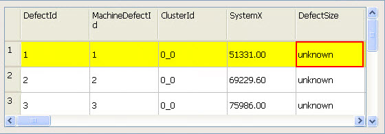

Automatic Defect Classification Using Defect Size
The DefectSizeClassification entry under the ClassificationInfo node in the dat-ini.xml file can be configured for automatic classification.
You must specify the area range and corresponding type in the attributes.
The starting area range in the DefectSizeClassification node begins with either a left parenthesis (() or bracket ([). The end area range ends with a right parenthesis ()) or bracket (]). These values must be separated by commas.
Using a parenthesis or bracket has different implications in the syntax, as described in Table 1.
Symbol |
Description |
|---|---|
( |
The starting area value is not included in the area range. |
[ |
The starting area value is included in the area range. |
) |
The end area value is not included in the area range. |
] |
The end area value is included in the area range. |
The DefectSizeClassification node can be used to specify ranges for each of the following default classification types:
Small
Medium
Large
Xlarge
You can modify these types or add new classification types.
The corresponding Defect List column named “DefectSize” is present under the DefectListInfo node in the dat-ini.xml file.
The Defect Size Classification features can be enabled by setting the value of “visible” to “yes” in the DefectSize node. If the value of “visible” is set to “no”, then the Defect Size Classification feature is unavailable.
The Defect List table with the DefectSize column enabled is shown in Figure 3.

If the classification of the defect is the largest defect size classification specified in the DefectSizeClassification node of the dat-ini.xml file, then the corresponding defect’s DefectSize cell is highlighted with a red background in the Defect List window as shown in Figure 4.
Note the following:
If the range values are discontinuous or not undefined, then the DefectSize column indicates this with “unknown” as illustrated in Figure 5.
Figure 5. Unknown DefectSizeThe area units are the square of the unit of measurement. For more details about the unit of measurement, refer to “Unit of Measurement Configuration”.